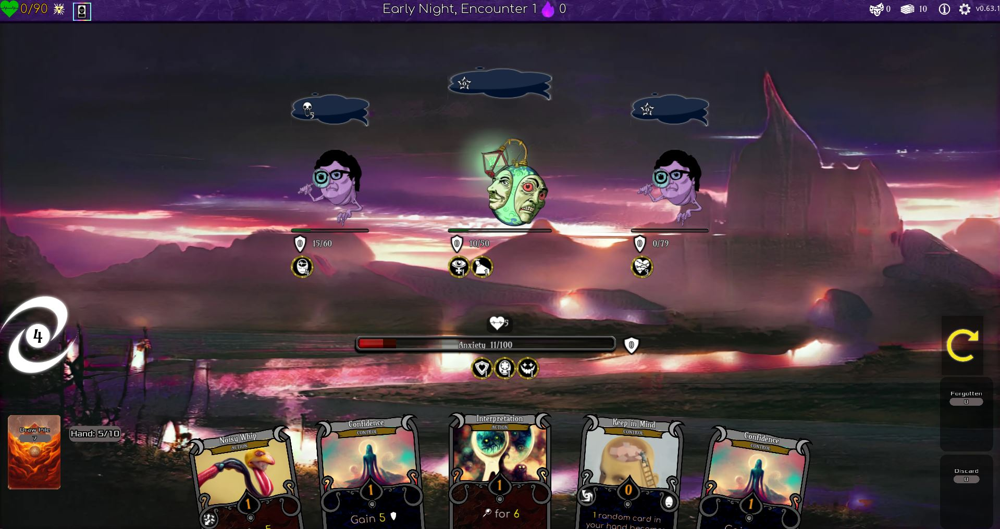
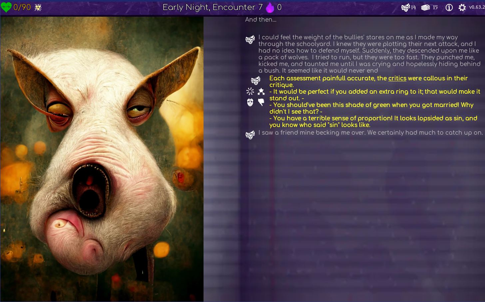

RECORDED EVIDENCE
Observation Ordeal
실제 evidence를 불러오는 중입니다.- MODEL
- -
- RAW EVENTS
- -
- PUBLIC
- -
- PROOF GATE
- -

THE QUESTION
어떤 SDK 주장을 실제 사건으로 말할 수 있는가?
0 observed · 0 correction · 0 additional observation required
-
-
카드를 선택하세요
주장을 선택하면 검증 질문이 나타납니다.
OBSERVED CONSEQUENCE
-
-
SOURCE
-검증된 evidence를 불러오지 못했습니다.
가짜 ordeal로 대체하지 않습니다. catalog JSON을 확인하세요.